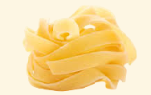

Menu
Plats du Jour (Déjeuner)
LUNDI
- Soupe: Bouillon de Poulet aux Carottes et Pâtes - 1,5€
- • Filet de Poisson Pané, Riz et Légumes Sautés - 6,4€
- • Pâtes à la Sauce Fromage, Champignons et Poulet - 6,4€
MARDI
- Soupe: Bouillon de Poisson aux Tomates et Pâtes - 1,5€
- • Porc Alentejano aux Pommes de Terre, Cornichons et Palourdes - 6,4€
- • Pâtes Bolognaise au Fromage Parmesan - 6,4€
MERCREDI
- Soupe: Bouillon de Haricots aux Haricots Verts - 1,5€ Veg
- • Cuisses de Poulet au Four, Riz, Frites et Salade - 6,4€
- • Pâtes Linguini Noires aux Fruits de Mer - 6,4€
JEUDI
- Soupe: Crème de Carottes aux Épinards - 1,5€ Veg
- • Morue à Brás - 6,4€
- • Pâtes à la Stracciatella (Mozzarella Fraîche à la Crème), avec sauce tomate, pâte de poivrons et parmesan fondu - 6,4€ Veg
VENDREDI
- Soupe: Crème de Petits Pois - 1,5€ Veg
- • Feijoada Brésilienne avec Riz, Vinaigrette, Lard Grillé, Chou, Farine de Manioc et Tranche d'Orange - 7,4€
- • Pâtes à Pietro (Saucisse fraîche épicée, oignons et sauce tomate) au Fromage Parmesan - 7,4€
SAMEDIS ET JOURS FÉRIÉS
- Soupe: Sopa da Pedra - 2€ Veg
- • Lasagne Bolognaise aux Pâtes Fraîches, Sauce Bolognaise, Sauce Béchamel et fromage gratiné - 9,9€
Entrées
- Amuse-bouches Salés – 1,3€
- Rissoles de Viande, Rissoles de Crevettes, Chaussons au Poulet, Coxinhas de Poulet, Boulettes de Fromage
- Mini fromage de vache affiné + 2 tranches de pain – 1,9€
- Petit Apéritif - 1,9€ Veg
- Pain (3 tranches), beurre et olives
- • Salade Simple – 2,5€ Veg / Avec Thon + 2€ / Avec Crevettes + 3€
- Laitue, Tomates et Oignons
- Bruschetta avec Stracciatella et Pesto de Basilic - 3,9€ Veg
- 2 tranches de pain maison, mozzarella fraîche avec crème, pesto de basilic et huile d'olive
Plats de Viande ou Salades avec Viande
- Escalope de Poulet - 7,4€
- Escalopes de Porc - 7,4€
- Escalope de Veau - 8,4€
- Filet de Poisson Pané - 8,4€
- Stroganoff de Poulet - 8,4€
- Parmigiana de Poulet - 9,4€
Choisissez 2 Accompagnements: Riz - Frites - Pommes Paille - Salade
(Accompagnement supplémentaire sur n'importe quel plat : + 0,5€)
Lasagnes
- Lasagne Bolognaise - 11,5€
- Pâtes fraîches, sauce bolognaise, sauce béchamel et fromage gratiné
- Lasagne de Morue - 11,5€
- Pâtes fraîches, morue sautée aux oignons, persil et huile d'olive, sauce béchamel et fromage gratiné
- Lasagne d'Aubergine - 11,5€ Veg
- Tranches d'aubergine grillées, sauce tomate aux olives et oignons, couches de parmesan et fromage gratiné
Risottos
- Citron et Poireau - 7,9€ Veg / Avec Crevettes + 3€
- Avec beurre et fromage parmesan. Citrique, aromatique et croquant
- Champignons - 8,7€ Veg
- Avec beurre et fromage parmesan
- Poulet aux Tomates - 8,7€
- Avec beurre et fromage parmesan
- Crevettes aux Tomates - 11,7€
- Avec beurre et fromage parmesan
- Fruits de Mer au Citron - 10,7€
- Crevettes, chair de palourdes, mini calmars et moules, jus de citron, beurre et fromage parmesan
- Poulpe Croustillant - 13,7€
- Cubes de poulpe au vin rouge terminés avec tentacules de poulpe croustillants, beurre et fromage parmesan
Pâtes
Choisissez une Pâte :
Sèche : Penne

Fraîche/Maison : Tagliatelle (+1€)
- Pomodori - 6,9€ Veg / Avec Crevettes + 3€
- Sauce tomate, basilic, morceaux de tomate
- Cacio e Pepe - 6,9€ Veg
- Poivre noir grillé et crème de fromage parmesan
- Limone - 6,9€ Veg / Avec Crevettes + 3€
- Sauce au fromage, jus et zeste de citron, très parfumé
- Stracciatella - 7,9€ Veg / Avec Poulet + 2€ / Avec Crevettes + 3€
- Sauce tomate, pâte de poivrons et parmesan fondu, servi avec stracciatella (mozzarella fraîche enrichie à la crème)
- Pietro (Saucisse Fraîche Épicée) - 8,7€
- Morceaux de saucisse fraîche épicée avec oignon et sauce tomate
- Bolognaise - 8,7€
- Viande de veau hachée en sauce tomate
- Champignons au Fromage - 8,7€ Veg / Avec Crevettes + 3€
- Champignons frais sautés à l'huile d'olive et sauce au fromage
- Poulet au Fromage - 8,7€
- Lanières de poulet dorées et sauce au fromage
- Puttanesca - 8,7€
- Anchois fondus dans la sauce tomate avec huile d'olive, piment calabrais, morceaux de tomate et olives noires
- Melanzane - 8,7€ Veg
- Morceaux d'aubergine grillée en sauce tomate
- Pesto de Basilic - 8,7€ Veg
- Crème de basilic avec huile d'olive, noix de cajou et fromage parmesan
- Carbonara - 9,3€
- Lard frit à la crème de jaunes d'œufs et fromage parmesan
- Matriciana - 9,3€
- Lard frit, sauce tomate au fromage parmesan
- Mare - 11,9€
- Pâtes Linguini Noires avec grosses et petites crevettes, chair de palourdes, mini calmars et moules sautés au beurre avec ail, jus et zeste de citron
Boissons
- Eau plate 330ml - 0,7€
- Eau plate 1000ml - 1,7€
- Eau gazeuse 250ml - 1,2€
- Eau gazeuse aromatisée 250ml - 1,5€
- Sodas/Sumol canette 330ml - 1,5€
- Compal Saveurs 200ml - 1,5€
- Ice Tea Saveurs 330ml - 1,5€
- Mini Super Bock / Sagres 200ml - 1€
- Heineken 250ml ou Corona 210ml - 1,5€
- Franciscana 500ml - 3,5€
- Somersby 200ml - 1,5€
Cocktails
- Aperol Spritz - 4,5€
- Liqueur Italienne d'Orange, vin blanc pétillant et eau gazeuse. Rafraîchissant, légèrement sucré avec une pointe d'amertume d'orange
- Limoncello (Digestif) Shot - 1,5€
- Un shot de Liqueur Italienne de Citron sorti du congélateur au moment de servir
- Caipirinha Citron Vert - 4,5€
- Cachaça Brésilienne, sucre, citron vert et beaucoup de glace
Nos Vins
- Blanc Mature: Favelos
- Blanc Pétillant: Faisão
- Rouges: Mestre Silva (Douro), Dom Manuel (Pinhel), Cruzeiro (Poço do Canto)
Petit verre 0,7€ - Grand verre 1,5€ - Pichet 500ml 3,2€
Nos Horaires
Lundi au Vendredi de 9h à 18:30h / Samedi de 11:30h à 14:30h
Dimanche Fermé
Téléphone: 960 033 554